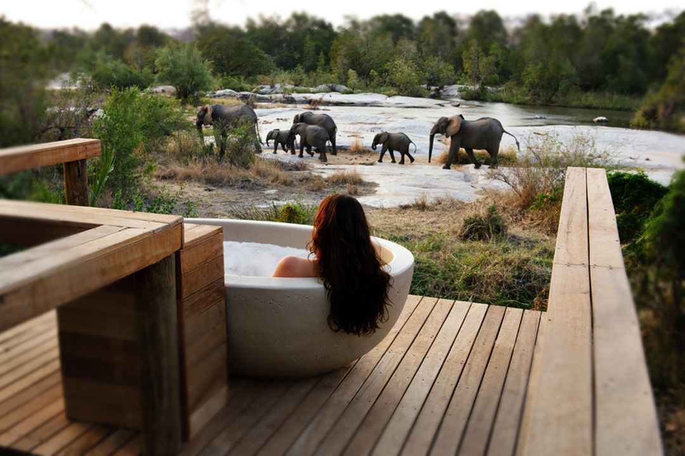

Solo travel in Africa can be a rewarding and enriching experience for those looking to explore the diverse and beautiful continent on their own. Africa offers a wide range of destinations and experiences for solo travelers, from the vibrant markets and historical sites of cities like Marrakech in Morocco and Cape Town in South Africa, to the stunning natural landscapes of the Serengeti in Tanzania and the Okavango Delta in Botswana.
Safety is a key consideration when traveling solo in Africa, as some regions may have security concerns or risks for travelers. It is important to research and plan your trip carefully, stay informed about local conditions, and take necessary precautions to ensure your safety and well-being.
One of the great benefits of solo travel in Africa is the opportunity to meet new people, experience different cultures, and immerse yourself in local communities. Many African countries are known for their hospitality and warmth towards visitors, making it easy to connect with locals and fellow travelers along the way.
Whether you're interested in wildlife safaris, cultural exchanges, or simply seeking adventure and discovery, solo travel in Africa can offer a unique and memorable experience that will leave you with lasting memories and a deeper appreciation for the continent's rich history and natural beauty.
Solo travel can also be a transformative experience, allowing you to explore the world at your own pace, meet new people, and immerse yourself in different cultures. Africa, with its diverse landscapes, rich history, and vibrant cultures, is a popular destination for solo travelers seeking adventure and discovery. In this guide, we will provide you with tips and recommendations to make your solo journey to Africa a memorable and rewarding experience.
Research and Planning

Solo travel in Africa can be an exciting and rewarding experience, but it's important to do thorough research and planning to ensure a safe and enjoyable trip.
Firstly, before embarking on your trip, research different destinations in Africa to find one that suits your interests and travel preferences. Consider factors such as safety, visa requirements, healthcare facilities, transportation options, and local customs. Safety should be a top priority for solo travelers in Africa. Research the safety situation in your destination, stay informed about local laws and customs, and take necessary precautions to protect yourself and your belongings. It's also a good idea to register with your embassy or consulate before traveling.
Secondly, make sure you are up to date on vaccinations required for travel to Africa and take necessary precautions to prevent illnesses such as malaria and other tropical diseases. Consider purchasing travel insurance that covers medical emergencies.Create a detailed budget for your trip, including expenses for accommodations, transportation, food, activities, and emergency funds. Plan your itinerary in advance to make the most of your time in Africa and ensure you have a smooth and enjoyable trip.
Finally, learn about the culture and customs of the country you are visiting to show respect for the local people and enhance your travel experience. Be mindful of local traditions, dress codes, and etiquette to avoid inadvertently offending anyone. As a solo traveler, it's important to stay vigilant and trust your instincts. Avoid walking alone at night in unfamiliar areas, keep a copy of important documents such as your passport and travel insurance, and stay connected with friends and family back home.
By conducting thorough research and planning carefully, solo travelers can have a safe and memorable trip to Africa. Remember to create a rough itinerary outlining the places you want to visit, but also allow for flexibility to embrace unexpected opportunities along the way.
Choose Safe and Solo-Friendly Destinations

Choosing a safe and solo-friendly destination for solo travelers in Africa involves considering several factors to ensure a positive and secure experience. First, prioritize destinations with a reputation for safety and low crime rates. Research the current political stability and safety situation in the region you plan to visit.
Opt for destinations with good transportation infrastructure and reliable public transportation options to make getting around easier as a solo traveler. Look for accommodations that cater to solo travelers, such as hostels, guesthouses, or boutique hotels that offer a safe and welcoming environment. Second, choose destinations where English is widely spoken to facilitate communication and help you navigate the area more easily. Consider destinations that are known for their hospitality and friendliness towards solo travelers.
Opt for countries known for their safety, hospitality, and infrastructure that support solo travel, such as South Africa, Namibia, Botswana, and Kenya. Consider destinations that offer a mix of urban exploration, wildlife safaris, cultural experiences, and outdoor adventures to cater to your interests. Engaging with the local culture and people can enhance your experience.
Finally, select destinations with reliable internet and mobile phone coverage to stay connected with family and friends as well as access maps and travel apps for navigation.Ensure you have comprehensive travel insurance that covers medical emergencies, trip cancellations, and other unforeseen circumstances to provide peace of mind during your solo trip.
Accommodation Options
Accommodation options for solo travelers in Africa can vary widely depending on the country and region you are visiting. Here are some common accommodation options that solo travelers may consider when traveling in Africa:
Hostels are a popular choice for solo travelers as they offer budget-friendly accommodation options with the opportunity to meet and socialize with other travelers. Many hostels in Africa offer shared dormitory rooms as well as private rooms. Guesthouses are smaller establishments offering a more intimate and homely atmosphere compared to hotels. They often provide a more personalized experience and are a good option for solo travelers looking for a cozy and welcoming place to stay.
Bed and Breakfasts (B&Bs) are another popular accommodation option for solo travelers in Africa. They typically offer a comfortable room with breakfast included in the rate, providing a home-like ambiance and a chance to interact with the local hosts. Boutique hotels are smaller, stylish hotels with unique decor and personalized services. These hotels cater to solo travelers seeking a more upscale and intimate accommodation experience in Africa.
Backpacker lodges are budget-friendly accommodations that cater to independent travelers looking for a social atmosphere. These lodges often have communal areas where travelers can meet and interact with others. For solo travelers seeking an adventurous experience in Africa, staying at safari camps can be a memorable option. These camps are often located in or near national parks and game reserves, offering opportunities to explore wildlife and nature.
It's important to research and book accommodation in advance, especially when traveling solo, to ensure safety and availability. Additionally, consider factors such as location, amenities, and reviews when choosing accommodation options in Africa as a solo traveler.
Safety Tips

Traveling solo in Africa can be an adventurous and exciting experience, but it's important to prioritize safety during your trip. Before you travel to any African country, research the destination, including the culture, customs, and safety information. Plan your itinerary in advance and share it with a trusted friend or family member. Keep yourself updated on the current political, social, and security situation in the countries you plan to visit. Check travel advisories issued by your government or reputable sources.
Avoid drawing unnecessary attention to yourself by dressing modestly and respecting local customs. Try to blend in with the local population as much as possible.Opt for registered taxis or reputable transportation services when moving around in unfamiliar areas. Avoid hitchhiking or using unmarked vehicles. Keep your valuables, such as passports, money, and electronics, secure at all times. Consider using a money belt or anti-theft bag to prevent theft.
It's safer to avoid walking alone at night, especially in unfamiliar or dimly lit areas. If you must go out after dark, use a trusted transportation service.If something doesn't feel right or you feel unsafe, trust your instincts and remove yourself from the situation. Avoid risky or potentially dangerous situations. Keep in touch with friends, family, or fellow travelers and update them on your whereabouts regularly. Consider getting a local SIM card for your phone for better communication.
Learning a few basic local phrases can help you navigate language barriers and communicate with locals more effectively. Ensure you have necessary vaccinations and medications for your trip. Drink bottled water, eat at reputable establishments, and practice good hygiene to prevent illness.
Embrace Cultural Exchange

Cultural exchange for solo travelers in Africa offers a rich and diverse experience that can broaden perspectives, create connections, and foster mutual understanding. There are some ways solo travelers can embrace cultural exchange in Africa which includes:
Staying with local families allows solo travelers to immerse themselves in the daily life, customs, and traditions of the host community. It provides a unique opportunity to learn firsthand about the local culture, language, and way of life. Engaging in volunteer opportunities in Africa can be a meaningful way to give back to the community while learning about local traditions and customs. This can involve participating in community development projects, conservation efforts, or educational programs.
Joining cultural events, festivals, and workshops can expose solo travelers to the art, music, dance, and cuisine of the region. This hands-on experience can deepen one's appreciation for the local culture and forge connections with the community. Sampling traditional foods and drinks is a delicious way to explore a culture. Solo travelers can visit local markets, street food stalls, and restaurants to taste authentic dishes and engage with local vendors and chefs.
Learning a few basic phrases in the local language can go a long way in facilitating communication and building rapport with locals. Solo travelers can take language classes, practice with new acquaintances, and engage in language exchange programs. Joining guided tours led by local guides can provide solo travelers with insights into the history, customs, and traditions of the region. These tours offer an educational and interactive way to engage with the local culture.
By embracing cultural exchange opportunities in Africa, solo travelers can gain a deeper understanding of the diverse societies, traditions, and people of the continent. This immersive experience can lead to personal growth, cross-cultural friendships, and lasting memories.
Wildlife and Nature Experiences
One of the most iconic experiences in Africa is going on a safari to see the continent's incredible wildlife up close. Countries like Kenya, Tanzania, South Africa, Botswana, and Namibia offer a variety of safari options, including game drives, walking safaris, and hot air balloon rides. For a truly unique wildlife experience, consider gorilla trekking in countries like Rwanda, Uganda, or the Democratic Republic of the Congo. This once-in-a-lifetime experience allows you to observe endangered mountain gorillas in their natural habitat.
Explore the stunning landscapes of Africa's deserts, such as the Namib Desert in Namibia or the Sahara Desert in Morocco. You can go on camel treks, sandboarding excursions, or simply enjoy the solitude and beauty of the desert.Head to the coast to experience Africa's diverse marine life. Countries like South Africa, Mozambique, and Madagascar offer opportunities for diving, snorkeling, and whale watching. You can swim with dolphins, observe whale sharks, or explore colorful coral reefs.
Africa is also home to many breathtaking natural landscapes that are perfect for solo travelers who love adventure. Consider hiking to the top of Mount Kilimanjaro in Tanzania, trekking through the Simien Mountains in Ethiopia, or exploring the Drakensberg Mountains in South Africa. In addition to wildlife encounters, Africa also offers rich cultural experiences for solo travelers. Visit local communities, learn about traditional customs and rituals, and immerse yourself in the vibrant music, art, and cuisine of different African cultures.
Sustainable Travel Practices

Sustainable travel practices for solo travelers in Africa involve being mindful of your impact on the environment, local communities, and wildlife while exploring the continent. Stay in locally owned accommodations, eat at locally owned restaurants, and buy souvenirs from local artisans to support the local economy. Stay in eco-friendly lodges and hotels that prioritize sustainability practices such as using renewable energy sources, reducing water consumption, and minimizing waste.
When going on safaris or wildlife tours, follow the rules and guidelines set by the tour operators to minimize your impact on the animals and their habitats. Avoid feeding, touching, or disturbing the wildlife. Opt for public transportation, bicycles, or walking to reduce your carbon footprint while exploring cities and towns. This also gives you a chance to immerse yourself in the local culture.
Refill your water bottle instead of buying single-use plastic bottles, carry a reusable shopping bag, and properly dispose of your trash to help reduce waste and pollution in the areas you visit. Respect the local culture, traditions, and customs of the communities you visit. Be mindful of what you wear, show respect in sacred sites, and ask for permission before taking photos of people.
Consider volunteering or donating to local conservation organizations that are working to protect wildlife, natural habitats, and cultural heritage sites in Africa. By practicing sustainable travel as a solo traveler in Africa, you can make a positive impact on the environment and local communities while having a meaningful and memorable travel experience.
Solo Travel Essentials

- Travel Insurance: This is essential for any trip, but especially important for solo travelers in case of emergencies or unexpected events.
- Passport and Visa: Make sure your passport is up-to-date and check the visa requirements for the countries you plan to visit in Africa.
- Local Currency and Cash: While credit cards are accepted in many places, it's always a good idea to have some local currency on hand for smaller purchases and in case of emergencies.
- Portable Charger and Power Adapter: Keep your devices charged so you can stay connected and navigate your way around with maps or translation apps.
- First Aid Kit: Include basic necessities like bandages, antiseptic wipes, pain relievers, and any personal medications you may need.
- Reusable Water Bottle: Stay hydrated by refilling your bottle with filtered or purified water to avoid buying single-use plastic bottles.
- Light Backpack: Opt for a comfortable and secure backpack to carry your essentials during day trips and when exploring different locations.
- Travel Guide or Map: Have a guidebook or offline map handy to help you navigate your way around and discover local attractions.
- Personal Safety Items: Consider carrying a whistle, personal alarm, or a money belt for added security, especially when traveling alone.
- Travel Towel: Pack a quick-dry, lightweight towel for beach days, impromptu swims, or to use in shared accommodations.
Remember to pack according to the specific destinations and activities you have planned in Africa. Keep in mind the local customs and climate of the region you'll be visiting to ensure you have a comfortable and enjoyable solo travel experience.
In conclusion, solo travel in Africa offers a unique opportunity to explore diverse landscapes, cultures, and wildlife while fostering personal growth, independence, and a deeper appreciation for the world around us. By following these tips and recommendations, you can embark on a safe, enriching, and unforgettable solo journey across the enchanting continent of Africa. Remember to embrace the spirit of adventure, connect with the people and places you encounter, and savor every moment of your solo traveler's guide to Africa. Happy travels!